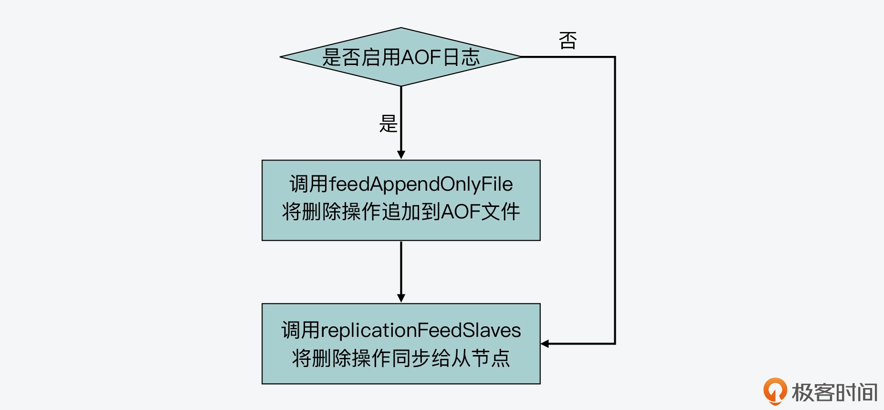

- 00 开篇词 阅读Redis源码能给你带来什么？.md
- 01 带你快速攻略Redis源码的整体架构.md
- 02 键值对中字符串的实现，用char还是结构体？.md
- 03 如何实现一个性能优异的Hash表？.md
- 04 内存友好的数据结构该如何细化设计？.md
- 05 有序集合为何能同时支持点查询和范围查询？.md
- 06 从ziplist到quicklist，再到listpack的启发.md
- 07 为什么Stream使用了Radix Tree？.md
- 08 Redis server启动后会做哪些操作？.md
- 09 Redis事件驱动框架（上）：何时使用select、poll、epoll？.md
- 10 Redis事件驱动框架（中）：Redis实现了Reactor模型吗？.md
- 11 Redis事件驱动框架（下）：Redis有哪些事件？.md
- 12 Redis真的是单线程吗？.md
- 13 Redis 6.0多IO线程的效率提高了吗？.md
- 14 从代码实现看分布式锁的原子性保证.md
- 15 为什么LRU算法原理和代码实现不一样？.md
- 16 LFU算法和其他算法相比有优势吗？.md
- 17 Lazy Free会影响缓存替换吗？.md
- 18 如何生成和解读RDB文件？.md
- 19 AOF重写（上）：触发时机与重写的影响.md
- 20 AOF重写（下）：重写时的新写操作记录在哪里？.md
- 21 主从复制：基于状态机的设计与实现.md
- 22 哨兵也和Redis实例一样初始化吗？.md
- 23 从哨兵Leader选举学习Raft协议实现（上）.md
- 24 从哨兵Leader选举学习Raft协议实现（下）.md
- 25 PubSub在主从故障切换时是如何发挥作用的？.md
- 26 从Ping-Pong消息学习Gossip协议的实现.md
- 27 从MOVED、ASK看集群节点如何处理命令？.md
- 28 Redis Cluster数据迁移会阻塞吗？.md
- 29 如何正确实现循环缓冲区？.md
- 30 如何在系统中实现延迟监控？.md
- 31 从Module的实现学习动态扩展功能.md
- 32 如何在一个系统中实现单元测试？.md
- 结束语 Redis源码阅读，让我们从新开始.md
17 Lazy Free会影响缓存替换吗？
Redis 缓存淘汰算法的目的，其实是为了在 Redis server 内存使用量超过上限值的时候，筛选一些冷数据出来，把它们从 Redis server 中删除，以保证 server 的内存使用量不超出上限。我们在前两节课，已经分别学习了 Redis 源码对 LRU 算法和 LFU 算法的实现，这两种算法在最后淘汰数据的时候，都会删除被淘汰的数据。
不过，无论是 LRU 算法还是 LFU 算法，它们在删除淘汰数据时，实际上都会根据 Redis server 的 lazyfree-lazy-eviction 配置项，来决定是否使用 Lazy Free，也就是惰性删除。
惰性删除是 Redis 4.0 版本后提供的功能，它会使用后台线程来执行删除数据的任务，从而避免了删除操作对主线程的阻塞。但是，后台线程异步删除数据能及时释放内存吗？它会影响到 Redis 缓存的正常使用吗？
今天这节课，我就来给你介绍下惰性删除在缓存淘汰时的应用。了解这部分内容，你就可以掌握惰性删除启用后，会给 Redis 缓存淘汰和内存释放带来的可能影响。这样，当你在实际应用中，遇到 Redis 缓存内存容量的问题时，你就多了一条排查思路了。
好，那么接下来，我们就先来看下缓存淘汰时的数据删除的基本过程。不过在了解这个删除过程之前，我们需要先了解下 Redis server 启动惰性删除的配置。因为在 Redis 源码中，有不少地方都会根据 server 是否启动惰性删除，来执行不同的分支操作。
惰性删除的设置
首先，当 Redis server 希望启动惰性删除时，需要在 redis.conf 文件中设置和惰性删除相关的配置项。其中包括了四个配置项，分别对应了如下的四种场景。
- lazyfree-lazy-eviction：对应缓存淘汰时的数据删除场景。
- lazyfree-lazy-expire：对应过期 key 的删除场景。
- lazyfree-lazy-server-del：对应会隐式进行删除操作的 server 命令执行场景。
- replica-lazy-flush：对应从节点完成全量同步后，删除原有旧数据的场景。
这四个配置项的默认值都是 no。所以，如果要在缓存淘汰时启用，就需要将
lazyfree-lazy-eviction 设置为 yes。同时，Redis server 在启动过程中进行配置参数初始化时，会根据 redis.conf 的配置信息，设置全局变量 server 的 lazyfree_lazy_eviction 成员变量。
这样一来，我们在 Redis 源码中，如果看到对 server.lazyfree_lazy_eviction 变量值进行条件判断，那其实就是 Redis 根据 lazyfree-lazy-eviction 配置项，来决定是否执行惰性删除。
好了，了解了如何在缓存淘汰场景中设置惰性删除之后，接下来，我们就来看下被淘汰数据的删除过程。
被淘汰数据的删除过程
其实通过前两节课程的学习，我们已经知道，Redis 源码中的 freeMemoryIfNeeded 函数（在evict.c文件中）会负责执行数据淘汰的流程。而该函数在筛选出被淘汰的键值对后，就要开始删除被淘汰的数据，这个删除过程主要分成两步。
第一步，freeMemoryIfNeeded 函数会为被淘汰的 key 创建一个 SDS 对象，然后调用 propagateExpire 函数，如下所示：
int freeMemoryIfNeeded(void) {
…
if (bestkey) {
db = server.db+bestdbid;
robj *keyobj = createStringObject(bestkey,sdslen(bestkey));
propagateExpire(db,keyobj,server.lazyfree_lazy_eviction);
…
}
propagateExpire 函数是在db.c文件中实现的。它会先创建一个 redisObject 结构体数组，该数组的第一个元素是删除操作对应的命令对象，而第二个元素是被删除的 key 对象。因为 Redis server 可能针对缓存淘汰场景启用了惰性删除，所以，propagateExpire 函数会根据全局变量 server 的 lazyfree_lazy_eviction 成员变量的值，来决定删除操作具体对应的是哪个命令。
如果 lazyfree_lazy_eviction 被设置为 1，也就是启用了缓存淘汰时的惰性删除，那么，删除操作对应的命令就是 UNLINK；否则的话，命令就是 DEL。因为这些命令会被经常使用，所以 Redis 源码中会为这些命令创建共享对象。这些共享对象的数据结构是 sharedObjectsStruct 结构体，并用一个全局变量 shared 来表示。在该结构体中包含了指向共享对象的指针，这其中就包括了 unlink 和 del 命令对象。
以下代码展示了 shared 全局变量的定义以及 sharedObjectsStruct 结构体的定义，其中，shared 变量是在server.c文件中定义的，而 sharedObjectsStruct 结构体是在server.h中定义的。
struct sharedObjectsStruct shared;
struct sharedObjectsStruct {
...
robj *del, *unlink,
...
}
然后，propagateExpire 函数在为删除操作创建命令对象时，就使用了 shared 变量中的 unlink 或 del 对象，这部分代码如下所示：
void propagateExpire(redisDb *db, robj *key, int lazy) {
robj *argv[2];
argv[0] = lazy ? shared.unlink : shared.del; //如果server启用了lazyfree-lazy-evict，那么argv[0]的值为unlink对象，否则为del对象
argv[1] = key; //被淘汰的key对象
...
}
紧接着，propagateExpire 函数会判断 Redis server 是否启用了 AOF 日志。如果启用了，那么 propagateExpire 函数会先把被淘汰 key 的删除操作记录到 AOF 文件中，以保证后续使用 AOF 文件进行 Redis 数据库恢复时，可以和恢复前保持一致。这一步是通过调用 feedAppendOnlyFile 函数（在aof.c文件中）来实现的。
然后，propagateExpire 函数会调用 replicationFeedSlaves 函数（在replication.c文件中），把删除操作同步给从节点，以保证主从节点的数据一致。
下面代码展示了 propagateExpire 函数的基本流程，你可以看下。
…
//如果启用了AOF日志，则将删除操作写入AOF文件
if (server.aof_state != AOF_OFF)
feedAppendOnlyFile(server.delCommand,db->id,argv,2);
//将删除操作同步给从节点
replicationFeedSlaves(server.slaves,db->id,argv,2);
…
为了便于你更直观地理解这个流程，我也画了一张图，你可以参考下。

这样接下来，freeMemoryIfNeeded 函数就会开始执行删除操作。
第二步，freeMemoryIfNeeded 函数会根据 server 是否启用了惰性删除，分别执行两个分支。
- 分支一：如果 server 启用了惰性删除，freeMemoryIfNeeded 函数会调用 dbAsyncDelete 函数进行异步删除。
- 分支二：如果 server 未启用惰性删除，freeMemoryIfNeeded 函数会调用 dbSyncDelete 函数进行同步删除。
而无论是执行异步删除还是同步删除，freeMemoryIfNeeded 函数都会在调用删除函数前，调用 zmalloc_used_memory 函数（在zmalloc.c文件中）计算当前使用的内存量。然后，它在调用删除函数后，会再次调用 zmalloc_used_memory 函数计算此时的内存使用量，并计算删除操作导致的内存使用量差值，这个差值就是通过删除操作而被释放的内存量。
所以，freeMemoryIfNeeded 函数最后会把这部分释放的内存量和已释放的内存量相加，得到最新的内存释放量。这部分的执行逻辑如以下代码所示：
delta = (long long) zmalloc_used_memory(); //获取当前内存使用量
if (server.lazyfree_lazy_eviction)
dbAsyncDelete(db,keyobj); //如果启用了惰性删除，则进行异步删除
else
dbSyncDelete(db,keyobj); //否则，进行同步删除
delta -= (long long) zmalloc_used_memory(); //根据当前内存使用量计算数据删除前后释放的内存量
mem_freed += delta; //更新已释放的内存量
所以到这里，我们就知道了 freeMemoryIfNeeded 函数在选定被删除的键值对后，可以通过异步或同步操作来完成数据的实际删除。那么，数据异步删除和同步删除具体又是如何执行的呢？
下面，我们就来具体了解下。
数据删除操作
在学习数据异步或同步删除之前，你首先需要知道，删除操作实际上是包括了两步子操作。
- 子操作一：将被淘汰的键值对从哈希表中去除，这里的哈希表既可能是设置了过期 key 的哈希表，也可能是全局哈希表。
- 子操作二：释放被淘汰键值对所占用的内存空间。
也就是说，如果这两个子操作一起做，那么就是同步删除；如果只做了子操作一，而子操作二由后台线程来执行，那么就是异步删除。
那么对于 Redis 源码来说，它是使用了 dictGenericDelete 函数，来实现前面介绍的这两个子操作。dictGenericDelete 函数是在 dict.c 文件中实现的，下面我们就来了解下它的具体执行过程。
**首先，dictGenericDelete 函数会先在哈希表中查找要删除的 key。**它会计算被删除 key 的哈希值，然后根据哈希值找到 key 所在的哈希桶。
因为不同 key 的哈希值可能相同，而 Redis 的哈希表是采用了链式哈希（你可以回顾下【第 3 讲】中介绍的链式哈希），所以即使我们根据一个 key 的哈希值，定位到了它所在的哈希桶，我们也仍然需要在这个哈希桶中去比对查找，这个 key 是否真的存在。
也正是由于这个原因，dictGenericDelete 函数紧接着就会在哈希桶中，进一步比对查找要删除的 key。如果找到了，它就先把这个 key 从哈希表中去除，也就是把这个 key 从哈希桶的链表中去除。
**然后，dictGenericDelete 函数会根据传入参数 nofree 的值，决定是否实际释放 key 和 value 的内存空间。**dictGenericDelete 函数中的这部分执行逻辑如下所示：
h = dictHashKey(d, key); //计算key的哈希值
for (table = 0; table <= 1; table++) {
idx = h & d->ht[table].sizemask; //根据key的哈希值获取它所在的哈希桶编号
he = d->ht[table].table[idx]; //获取key所在哈希桶的第一个哈希项
prevHe = NULL;
while(he) { //在哈希桶中逐一查找被删除的key是否存在
if (key==he->key || dictCompareKeys(d, key, he->key)) {
//如果找见被删除key了，那么将它从哈希桶的链表中去除
if (prevHe)
prevHe->next = he->next;
else
d->ht[table].table[idx] = he->next;
if (!nofree) { //如果要同步删除，那么就释放key和value的内存空间
dictFreeKey(d, he); //调用dictFreeKey释放
dictFreeVal(d, he);
zfree(he);
}
d->ht[table].used--;
return he;
}
prevHe = he;
he = he->next; //当前key不是要查找的key，再找下一个
}
...
}
那么，从 dictGenericDelete 函数的实现中，你可以发现，dictGenericDelete 函数实际上会根据 nofree 参数，来决定执行的是同步删除还是异步删除。而 Redis 源码在 dictGenericDelete 函数的基础上，还封装了两个函数 dictDelete 和 dictUnlink。
这两个函数的区别就在于，它们给 dictGenericDelete 函数传递的 nofree 参数值是 0，还是 1。如果其中 nofree 的值为 0，表示的就是同步删除，而 nofree 值为 1，表示的则是异步删除。
下面的代码展示了 dictGenericDelete 函数原型，以及 dictDelete 和 dictUnlink 两个函数的实现，你可以看下。
//dictGenericDelete函数原型，参数是待查找的哈希表，待查找的key，以及同步/异步删除标记
static dictEntry *dictGenericDelete(dict *d, const void *key, int nofree)
//同步删除函数，传给dictGenericDelete函数的nofree值为0
int dictDelete(dict *ht, const void *key) {
return dictGenericDelete(ht,key,0) ? DICT_OK : DICT_ERR;
}
//异步删除函数，传给dictGenericDelete函数的nofree值为1
dictEntry *dictUnlink(dict *ht, const void *key) {
return dictGenericDelete(ht,key,1);
}
好了，到这里，我们就了解了同步删除和异步删除的基本代码实现。下面我们就再来看下，在刚才介绍的 freeMemoryIfNeeded 函数中，它在删除键值对时，所调用的 dbAsyncDelete 和 dbSyncDelete 这两个函数，是如何使用 dictDelete 和 dictUnlink 来实际删除被淘汰数据的。
基于异步删除的数据淘汰
我们先来看下基于异步删除的数据淘汰过程。这个过程是由 dbAsyncDelete 函数执行的，它是在lazyfree.c文件中实现的。而这个函数的执行逻辑其实并不复杂，主要可以分成三步。
第一步，dbAsyncDelete 函数会调用 dictDelete 函数，在过期 key 的哈希表中同步删除被淘汰的键值对，如下所示：
if (dictSize(db->expires) > 0) dictDelete(db->expires,key->ptr);
第二步，dbAsyncDelete 函数会调用 dictUnlink 函数，在全局哈希表中异步删除被淘汰的键值对，如下所示：
dictEntry *de = dictUnlink(db->dict,key->ptr);
而到这里，被淘汰的键值对只是在全局哈希表中被移除了，它占用的内存空间还没有实际释放。所以此时，dbAsyncDelete 函数会调用 lazyfreeGetFreeEffort 函数，来计算释放被淘汰键值对内存空间的开销。如果开销较小，dbAsyncDelete 函数就直接在主 IO 线程中进行同步删除了。否则的话，dbAsyncDelete 函数会创建惰性删除任务，并交给后台线程来完成。
这里，你需要注意的是，虽然 dbAsyncDelete 函数说是执行惰性删除，但其实，它在实际执行的过程中，会使用前面提到的这个 lazyfreeGetFreeEffort 函数来评估删除开销。
lazyfreeGetFreeEffort 函数是在 lazyfree.c 文件中实现的，它对删除开销的评估逻辑很简单，就是根据要删除的键值对的类型，来计算删除开销。当键值对类型属于 List、Hash、Set 和 Sorted Set 这四种集合类型中的一种，并且没有使用紧凑型内存结构来保存的话，那么，这个键值对的删除开销就等于集合中的元素个数。否则的话，删除开销就等于 1。
我举个简单的例子，以下代码就展示了 lazyfreeGetFreeEffort 函数，计算 List 和 Set 类型键值对的删除开销。可以看到，当键值对是 Set 类型，同时它是使用哈希表结构而不是整数集合来保存数据的话，那么它的删除开销就是 Set 中的元素个数。
size_t lazyfreeGetFreeEffort(robj *obj) {
if (obj->type == OBJ_LIST) { //如果是List类型键值对，就返回List的长度，也就其中元素个数
quicklist *ql = obj->ptr;
return ql->len;
} else if (obj->type == OBJ_SET && obj->encoding == OBJ_ENCODING_HT) {
dict *ht = obj->ptr;
return dictSize(ht); //如果是Set类型键值对，就返回Set中的元素个数
}
...
}
这样，当 dbAsyncDelete 函数通过 lazyfreeGetFreeEffort 函数，计算得到被淘汰键值对的删除开销之后，接下来的第三步，它就会把删除开销和宏定义 LAZYFREE_THRESHOLD（在 lazyfree.c 文件中）进行比较，这个宏定义的默认值是 64。
所以，当被淘汰键值对是包含超过 64 个元素的集合类型时，dbAsyncDelete 函数才会调用 bioCreateBackgroundJob 函数，来实际创建后台任务执行惰性删除。关于 bioCreateBackgroundJob 函数的作用和工作机制，我在【第 12 讲】中已经给你介绍过了，你可以再去回顾下。
不过，如果被淘汰键值对不是集合类型，或者是集合类型但包含的元素个数小于等于 64 个，那么 dbAsyncDelete 函数就直接调用 dictFreeUnlinkedEntry 函数（在 dict.c 文件中），来释放键值对所占的内存空间了。
以下代码就展示了 dbAsyncDelete 函数，使用后台任务或主 IO 线程释放内存空间的逻辑，你可以看下。
//如果要淘汰的键值对包含超过64个元素
if (free_effort > LAZYFREE_THRESHOLD && val->refcount == 1) {
atomicIncr(lazyfree_objects,1);
bioCreateBackgroundJob(BIO_LAZY_FREE,val,NULL,NULL); //创建惰性删除的后台任务，交给后台线程执行
dictSetVal(db->dict,de,NULL); //将被淘汰键值对的value设置为NULL
}
if (de) {
dictFreeUnlinkedEntry(db->dict,de);
...
return 1;
}
另外，你也可以根据下图来整体回顾下这个执行过程。

好，那么现在，我们也就了解了基于异步删除的数据淘汰过程，实际上会根据要删除的键值对包含的元素个数，来决定是实际使用后台线程还是主线程来进行删除操作。
不过，如果是使用了后台线程来释放内存，那么随之带来的一个问题就是：主线程如何知道后台线程释放的内存空间，已经满足待释放空间的大小呢？
其实，freeMemoryIfNeeded 函数本身在调用 dbAsyncDelete 或 dbSyncDelete 函数的前后，都会统计已经使用的内存量，并计算调用删除函数前后的差值，这样其实就可以获得已经释放的内存空间大小。
而除此之外，freeMemoryIfNeeded 函数还会在调用 dbAsyncDelete 函数后，再次主动检测当前的内存使用量，是否已经满足最大内存容量要求。一旦满足了，freeMemoryIfNeeded 函数就会停止淘汰数据的执行流程了。这步的执行逻辑，你可以参考以下给出的代码：
int freeMemoryIfNeeded(void) {
...
//执行循环流程，删除淘汰数据
while (mem_freed < mem_tofree) {
...
//如果使用了惰性删除，并且每删除16个key后，统计下当前内存使用量
if (server.lazyfree_lazy_eviction && !(keys_freed % 16)) {
//计算当前内存使用量是否不超过最大内存容量
if (getMaxmemoryState(NULL,NULL,NULL,NULL) == C_OK) {
mem_freed = mem_tofree; //如果满足最大容量要求，让已释放内存量等于待释放量，以便结束循环
}
}
...
}}
到这里，我们就了解了基于异步删除的数据淘汰实现过程。接下来，我们再来看下基于同步删除的数据淘汰实现。
基于同步删除的数据淘汰
其实，和基于异步删除的数据淘汰过程相比，基于同步删除的数据淘汰过程就比较简单了。这个过程是由 dbSyncDelete 函数（在 db.c 文件中）实现的。
dbSyncDelete 函数主要是实现了两步操作。首先，它会调用 dictDelete 函数，在过期 key 的哈希表中删除被淘汰的键值对。紧接着，它会再次调用 dictDelete 函数，在全局哈希表中删除被淘汰的键值对。这样一来，同步删除的基本操作就完成了。
不过，这里你需要注意的是，dictDelete 函数通过调用 dictGenericDelete 函数，来同步释放键值对的内存空间时，最终是通过分别调用 dictFreeKey、dictFreeVal 和 zfree 三个函数来释放 key、value 和键值对对应哈希项这三者占用的内存空间的。
其中，zfree 函数是在 zmalloc.c 文件中实现的。而 dictFreeKey、dictFreeVal 这两个函数是在 dict.h 文件中定义的两个宏定义。它们的具体实现是根据操作的哈希表类型，调用相应的 valDestructor 函数和 keyDestructor 函数来释放内存。你可以看看下面的代码，其中就展示了 dictFreeKey 和 dictFreeVal 的宏定义。
#define dictFreeVal(d, entry) \
if ((d)->type->valDestructor) \
(d)->type->valDestructor((d)->privdata, (entry)->v.val)
#define dictFreeKey(d, entry) \
if ((d)->type->keyDestructor) \
(d)->type->keyDestructor((d)->privdata, (entry)->key)
那么，为了方便你能找到最终进行内存释放操作的函数，下面我就以全局哈希表为例，来带你看下当操作全局哈希表时，键值对的 dictFreeVal 和 dictFreeKey 两个宏定义对应的函数。
首先，全局哈希表是在 initServer 函数中创建的。在创建时，全局哈希表的类型是 dbDictType，如下所示：
void initServer(void) {
...
for (j = 0; j < server.dbnum; j++) {
server.db[j].dict = dictCreate(&dbDictType,NULL);
server.db[j].expires = dictCreate(&keyptrDictType,NULL);
...
}
...
}
其中，dbDictType 是一个 dictType 类型的结构体，dictType 类型是在 dict.h 文件中定义的。它的最后两个成员变量，就是 keyDestructor 函数指针和 valDestructor 函数指针，如下所示：
typedef struct dictType {
...
void (*keyDestructor)(void *privdata, void *key);
void (*valDestructor)(void *privdata, void *obj);
} dictType;
然后，对于 dbDictType 来说，它是在 server.c 文件中定义的。因为它作为全局哈希表，保存的是 SDS 类型的 key，以及多种数据类型的 value。所以，dbDictType 类型哈希表的 key 和 value 释放函数，实际上分别是 dictSdsDestructor 函数和 dictObjectDestructor 函数，如下所示：
dictType dbDictType = {
...
dictSdsDestructor, //key的释放函数
dictObjectDestructor //value的释放函数
};
这两个函数都是在 server.c 文件中实现的。
其中，dictSdsDestructor 函数主要是直接调用 sdsfree 函数（在 sds.c 文件中），释放 SDS 字符串占用的内存空间。而 dictObjectDestructor 函数会调用 decrRefCount 函数（在 object.c 文件中），来执行释放操作，如下所示：
void dictObjectDestructor(void *privdata, void *val)
{
...
decrRefCount(val);
}
那么在这里，你要知道的是，**decrRefCount 函数在执行时，会判断待释放对象的引用计数。**只有当引用计数为 1 了，它才会根据待释放对象的类型，调用具体类型的释放函数来释放内存空间。否则的话，decrRefCount 函数就只是把待释放对象的引用计数减 1。
现在，我们来举个例子。如果待释放对象的引用计数为 1，并且是 String 类型的话，那么 decrRefCount 函数就会调用 freeStringObject 函数，来执行最终的内存释放操作。而如果对象是 List 类型，那么 decrRefCount 函数则会调用 freeListObject 函数，来最终释放内存。这部分代码如下所示：
void decrRefCount(robj *o) {
if (o->refcount == 1) {
switch(o->type) {
case OBJ_STRING: freeStringObject(o); break;
case OBJ_LIST: freeListObject(o); break;
...
}
zfree(o);
} else {
...
if (o->refcount != OBJ_SHARED_REFCOUNT) o->refcount--;
}
}
我也画了一张图，来展示 decrRefCount 函数的基本执行逻辑，你可以看下。

所以说，基于同步删除的数据淘汰过程，其实就是通过 dictDelete 函数，将被淘汰键值对从全局哈希表移除，并通过 dictFreeKey、dictFreeVal 和 zfree 三个函数来释放内存空间。而通过以上内容的学习，你就已经知道释放 value 空间的函数是 decrRefCount 函数，它会根据 value 的引用计数和类型，最终调用不同数据类型的释放函数来完成内存空间的释放。
而在这里，你也要注意的是，基于异步删除的数据淘汰，它通过后台线程执行的函数是 lazyfreeFreeObjectFromBioThread 函数（在 lazyfree.c 文件），而这个函数实际上也是调用了 decrRefCount 函数，来释放内存空间的。
小结
今天这节课，我给你介绍了 Redis 缓存在淘汰数据时，执行的数据删除流程。因为在 Redis 4.0 版本之后提供了惰性删除的功能，所以 Redis 缓存淘汰数据的时候，就会根据是否启用惰性删除，来决定是执行同步删除还是异步的惰性删除。
而你要知道，无论是同步删除还是异步的惰性删除，它们都会先把被淘汰的键值对从哈希表中移除。然后，同步删除就会紧接着调用 dictFreeKey、dictFreeVal 和 zfree 三个函数来分别释放 key、value 和键值对哈希项的内存空间。而异步的惰性删除，则是把空间释放任务交给了后台线程来完成。
注意，虽然惰性删除是由后台线程异步完成的，但是后台线程启动后会监听惰性删除的任务队列，一旦有了惰性删除任务，后台线程就会执行并释放内存空间。所以，从淘汰数据释放内存空间的角度来说，惰性删除并不会影响缓存淘汰时的空间释放要求。
不过在最后，我也想提醒你一下，就是后台线程需要通过同步机制获取任务，这个过程会引入一些额外的时间开销，会导致内存释放不像同步删除那样非常及时。实际上，这也是 Redis 在被淘汰数据是小集合（元素不超过 64 个）时，仍然使用主线程进行内存释放的设计考虑因素。
每课一问
请你思考一下，freeMemoryIfNeeded 函数在使用后台线程，删除被淘汰数据的过程中，主线程是否仍然可以处理外部请求呢？
欢迎在留言区写下你的答案和思考。如果觉得有收获，也欢迎你把今天的内容分享给更多的朋友。
© 2019 - 2023 Liangliang Lee. Powered by Vert.x and hexo-theme-book.